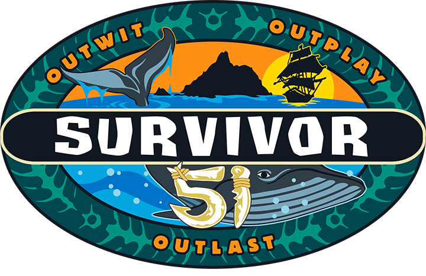

Survivor 51 is the 51st season of one of the most popular reality tv shows of all time. Jeff Probst is still the host of Survivor, starting his career way back in 2000 during Survivor Borneo. Survivor 51 starts a new chapter of the game and it is called the "Open Era of Survivor". Every twist, advantage, challenge, etc., is fair game. This season is full of great players who are ready to play the game, and this could be one of the best seasons of all time. I would love to see a guy win this season, due to the fact that the women have dominated these past few seasons. I really hope this will be a season to remember, as it sets the tone for the new chapter of the game. Do NOT click on the button to reveal the table if you do not want spoilers. You can watch all Survivor episodes on Paramount+, and watch the current season on CBS. For your information, the table will be updated as the season goes on. It will name the castaway, the tribe they were on, and what place they finished in.
The ultimate goal of Survivor for those that may not know is to make it to the end and convince the jury that you deserve to win. The Sole Survivor earns the title and a million-dollar prize, making every challenge, alliance, and vote extremely important. Every episode brings new challenges that test the castaways' strength, balance, endurance, memory, and problem-solving skills. Winning immunity can be the difference between staying in the game and being sent home. At Tribal Council, the castaways must face the consequences of their decisions. After discussing the day's events with Jeff Probst, the players cast their votes to determine who will be eliminated. With alliances constantly changing, no one is ever completely safe.
| First Name | Last Name | Tribe | Placement |
|---|---|---|---|
| Aaliyah | Puglia | Toka | 21st |
| Ana | Sani | Savu | 20th |